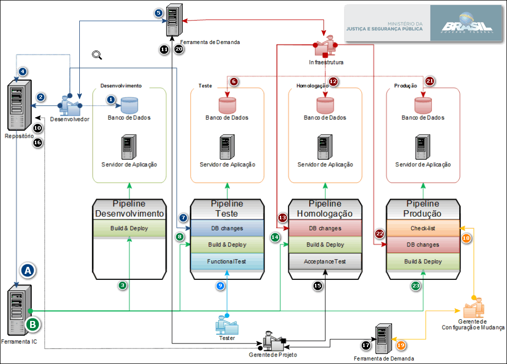

Procedimento Técnico - Integração Contínua
- Procedimento Técnico - Integração Contínua
- !/usr/bin/env bash
- set this to your active development branch
- regex to validate in commit msg - 3.2. Realização do Merge Request
1. Objetivo
Descrição de atividades a serem executadas por parte dos envolvidos no processo de entrega de código, build e deploy nas ferramentas git e jenkins.
2. Ferramentas envolvidas
O acesso as ferramentas é por intermédio do usuário e senha de rede vinculados aos grupos de domínio da CGTI.
-
Construção e Deploy de aplicação
- Jenkins para Projetos Java: http://java.jenkins.mj.gov.br/
- Jenkins para Projetos PHP:http://php.jenkins.mj.gov.br/
-
Versionamento de código
3. Fluxo de Trabalho
Abaixo segue representado Graficamente o fluxo de trabalho para integração contínua:

- [Desenvolvedor] Realiza alterações diretamente no banco de dados de desenvolvimento por meio da execução de scripts;
- [Desenvolvedor] Realiza a entrega do código fonte e scripts de banco de dados no repositório, no branch definido para entrega(master) no fork da própria empresa;
- [Ferramenta IC] Por meio do processo Automático(A) realiza o deploy da aplicação em ambiente de desenvolvimento;
- [Desenvolvedor] Valida alterações no ambiente de desenvolvimento, realiza o merge request para o fork da CGTI no branch definido(GQUAL), realiza a marcação de tag de versionamento;
- [Desenvolvedor] Realiza abertura de SATI para a equipe de Infraestrutura executar alterações no banco de dados de teste;
- [Infraestutura] Realiza alterações diretamente no banco de dados de teste por meio da execução de scripts;
- [Desenvolvedor] Realiza aprovação do Job DB changes de teste após confirmação de execução do SATI, informando o número do SATI que realizou a alteração no banco de dados de teste;
- [Ferramenta IC] Por meio do processo Automático(B) realiza o deploy da aplicação em ambiente de Teste;
- [Analista de Teste] Realiza a aprovação do Job Functional Test, informando evidências dos testes executados;
- [Gerente de Projeto] Realiza o merge request para o fork da CGTI no branch definido(master);
- [Gerente de Projeto] Realiza abertura de SATI para a equipe de Infraestrutura executar alterações no banco de dados de homologação;
- [Infraestutura] Realiza alterações diretamente no banco de dados de homologação por meio da execução de scripts;
- [Infraestutura] Realiza aprovação do Job DB changes de homologação após confirmação de execução do SATI, informando o número do SATI que realizou a alteração no banco de dados de homologação;
- [Ferramenta IC] Por meio do processo Automático(B) realiza o deploy da aplicação em ambiente de Homologação;
- [Gerente de Projeto] Realiza aprovação do Job Acceptance test de homologação após homologação do solicitante, informando o número do Processo SEI com a evidência do Aceite da demanda;
- [Gerente de Projeto] Realiza o merge request para o fork da CGTI no branch definido(stable);
- [Gerente de Projeto] Realiza abertura de demanda no Projetos CGTI para Auditoria
- [Gerente de Configuração e Mudança] Realiza aprovação do Job Check-list de produção após execução da Auditoria, informando o número da Demanda;
- [Gerente de Configuração e Mudança] Informa dados para o deploy em produção;
- [Gerente de Projeto] Realiza abertura de SATI para a equipe de Infraestrutura executar alterações no banco de dados de produção e realizar a aplicação de alterações em ambiente de produção;
- [Infraestutura] Realiza alterações diretamente no banco de dados de produção por meio da execução de scripts após realização de backup;
- [Infraestutura] Realiza aprovação do Job _DB changes de produção após confirmação de execução do SATI, informando o número do SATI que realizou a alteração no banco de dados de produção;
- [Desenvolvedor] Por meio do processo Automático(B) realiza o deploy da aplicação em ambiente de Produção.
A. Processo iniciado pelo gatilho de alterações de código em Branch pré-determinada
B. Processo iniciado pelo gatilho de aprovação de outro Job Jekins
3.1. Configurações das Ferramentas
git
A configuração do Git para o usuário, após a instalação deve ser a identificação do mesmo:
$ git config --global user.name “Seu Nome”
$ git config --global user.email “seu@email.com”
Essa configuração deve ser conforme o usuário LDAP já cadastrado na ferramenta GitLab previamente
Exemplo:

git template
Para melhorar a qualidade e poder haver rastreabilidade, o desenvolvedor deve criar no seu diretório de usuário os diretórios .git-templates\hooks e criar no diretório o arquivo commit-msg com o seguinte conteúdo:
#!/usr/bin/env bash
# set this to your active development branch
# regex to validate in commit msg
commit_regex='(SATI [0-9]+ - [a-zA-Z|0-9|.|,|\-| ]{1,120}|Redmine [0-9]+ - [a-zA-Z|0-9|.|,|\-| ]{1,120}|Issue #[0-9]+ - [a-zA-Z|0-9|.|,|\-| ]{1,120}|OS ([0-9|]+|[X][X][X][X]) - [a-zA-Z|0-9|.|,|\-| ]{1,120}|e-mail\([a-zA-Z|0-9|.]+@[a-zA-Z|0-9|.]+\) - [a-zA-Z|0-9|.|,|\-| ]{1,120})'
error_msg="Erro na validacao de expressao regular"
if ! grep -iqE "$commit_regex" "$1"; then
echo "------------------------------- ------------------------------------"
echo "------------------------------- ------------------------------------"
echo "| Erro ao realizar commit. Sua Mensagem de Commit deve |"
echo "| obedecer a um dos seguintes padrões, conforme GCM: |"
echo "| Issue do GitLab: 'Issue #1234 - Descricao ate 120 caracteres' |"
echo "| Issue do Redmine: 'Redmine 1234 - Descricao ate 120 caracteres' |"
echo "| OS MJ : 'OS 1234 - Descricao ate 120 caracteres' |"
echo "| SATI: 'SATI 1234 - Descricao ate 120 caracteres' |"
echo "|e-mail: 'e-mail(email@dominio.com) - Descricao ate 120 caracteres'|"
echo "------------------------------- ------------------------------------"
echo "------------------------------- ------------------------------------"
echo "$error_msg" >&2
exit 1
fi
Esse procedimento faz com que a mensagem de commit siga uma padrão e garante que será possível identificar a que demanda são as alterações relacionadas ao commit.
3.2. Realização do Merge Request
Para poder melhorar o versionamento e a geração de Changelogs no momento de realizar o merge request descrito no passo 4 do fluxo de trabalho é importante que no título do merge request conste a mensagem com o padrão abaixo:
V«MAIOR».«MENOR».«MICRO» - «Informação da demanda»
O esquema de numeração de versões adotado é baseado no esquema adotado pela organização Apache Foundation, definindo que uma versão é composta por quatro números inteiros, sendo que a alteração desses números segue o critério:
- MAIOR: Existe modificação na estrutura de dados ou na arquitetura do sistema, incremental;
- MENOR: Existe modificação na inclusão de um ou mais conjuntos de novas funcionalidades. Inicia com zero (zero) e deve ser reiniciado sempre que houver a troca da versão maior;
- MICRO: Existe correção de erros ou correção de comportamentos esperados no sistema. Inicia com zero (zero) e deve ser reiniciado sempre que houver a troca da versão maior ou da versão menor.
Exemplo:
4. Observações
4.2. Melhorias a implementar
- Versionamento realizado na entrega para a CGTI;
- Com a aplicação da TAG de Versionamento na entrega pela equipe de desenvolvimento é possível fazer com que o gatilho das construções automatizadas na ferramenta de integração contínua seja disparado a partir de uma determinada versão;
- O pipeline executado fica disponível para a versão entregue, podendo evidenciar o histórico de execução da versão do projeto;
- Garante que toda entrega, mesmo que não finalizada, seja versionada garantindo assim o rollback no projeto;
- Redução na quantidade de pipelines criados liberando recursos na Ferramenta IC;
- A partir do Versionamento é possível contruir a aplicação apontando no código fonte a versão da mesma e permitindo a gestão do pacote binário com a mesma numeração.
- Eliminação da necessidade de Fork para as empresas no repositório
- Diminuição nos conflitos de Merge;
- Força o rebase por parte da equipe para entrega de novo artefato;
- Liberação de recursos no repositório, como espaço e processamento.